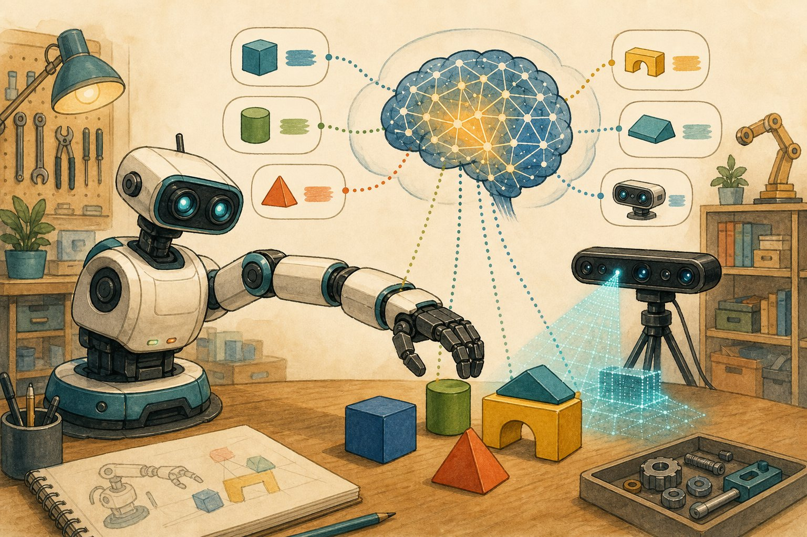

Robotics & vision-language-action
From chatbots that talk to robots that do: how vision-language-action models turn “clean the table” into motor commands — and why the real world is the hardest eval of all.

Figure 56.1 — See, understand, act. VLA models close the loop from pixels + language to torques.
1. The VLA loop
2. How policies learn
| Method | Idea | Needs |
|---|---|---|
| Teleop imitation | Humans demo; model clones (behaviour cloning, diffusion policy) | 100s–1000s of demos per task family |
| Sim + RL | Train in simulation, transfer (domain randomisation) | Good sim + measured sim-to-real gap |
| Internet pretrain | VLM priors from web-scale vision-language (Ch 51) | Fine-tune on robot data (Open X-Embodiment) |
| Human-in-loop | Interventions as labels; autonomy grows over time | Supervision UX + fallback policies |
3. Why robots are humbling
- Eval is physical: success = grasped the cup 47/50 trials across lighting, clutter, poses. Report distributions, not best takes.
- Latency kills: 500 ms VLM calls don’t control 50 Hz arms — distil to fast policies, run big models as planners, small ones as controllers (cascade, Ch 50).
- Safety is layered: workspace limits, force caps, e-stops, human approval for novel actions — never one model between intent and torque.
Robot pitfalls
Demo-video evals (3 takes, best one) · sim-only testing · ignoring latency until deployment · no e-stop story · grounding errors near humans (wrong object grasped) · open-loop execution without re-perception.
Short notes
VLA = eyes + VLM brain + action-token policy + 10–50 Hz control. Learn from teleop demos + sim + web priors + human interventions. Eval physically (success rates across conditions), split planner/controller by latency, and layer safety (limits, force caps, e-stops, approvals).
Point notes
- Actions as tokens, chunked.
- Demos + sim + priors.
- Eval grasps, not vibes.
- Planner slow, control fast.
- Layers between intent, torque.
MCQs
5 questions1. VLA models output actions by:
2. Honest robot eval reports:
3. A 500 ms VLM can’t directly control a 50 Hz arm, so you:
4. Minimum safety layers for a manipulation robot near people:
5. Domain randomisation in sim training aims to:
Practice questions
P1. Spec “tidy the warehouse tote” for a VLA pilot: inputs, outputs, eval, safety.
Inputs: RGB-D + “place items in bins by label”. Outputs: chunked pick-place actions at 20 Hz. Eval: 100 totes × item types × lighting; success = correct bin, no drops/damage; report per-item rates. Safety: fenced cell, force caps, e-stop, human approves first 50 runs; log video + interventions as new training data.
P2. Sim success 95%, real success 40%. Debug in order.
(1) Perception gap: real textures/lighting outside sim distribution → widen randomisation + real fine-tune data. (2) Physics gap: friction/mass wrong → calibrate + add noise. (3) Latency gap: sim acts instantly, real has delays → latency-aware training. (4) Task gap: sim objects easier → match real distribution. Fix top contributor first, re-measure.
P3. The arm grasps the wrong (similar-looking) object twice a day. Fix pipeline?
Grounding failure. Add: verify step (crop + confirm “is this the red valve?” above threshold, else ask), distinctive markers/tags for critical objects, hard-negative fine-tuning on confusable pairs, and a pre-grasp pause with projected highlight for human veto on high-stakes picks.